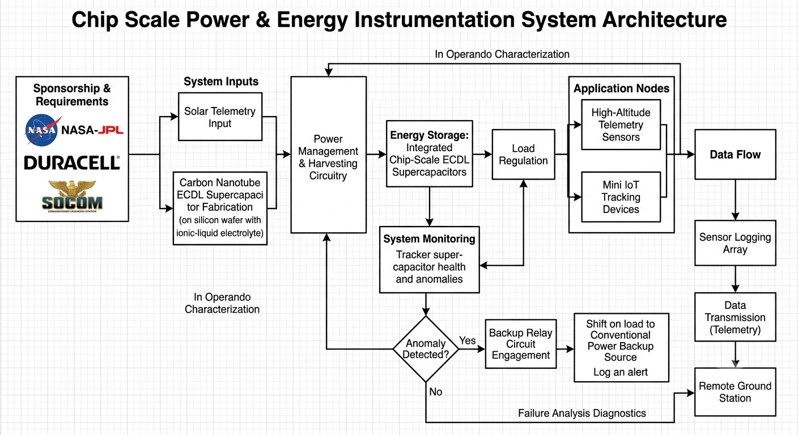
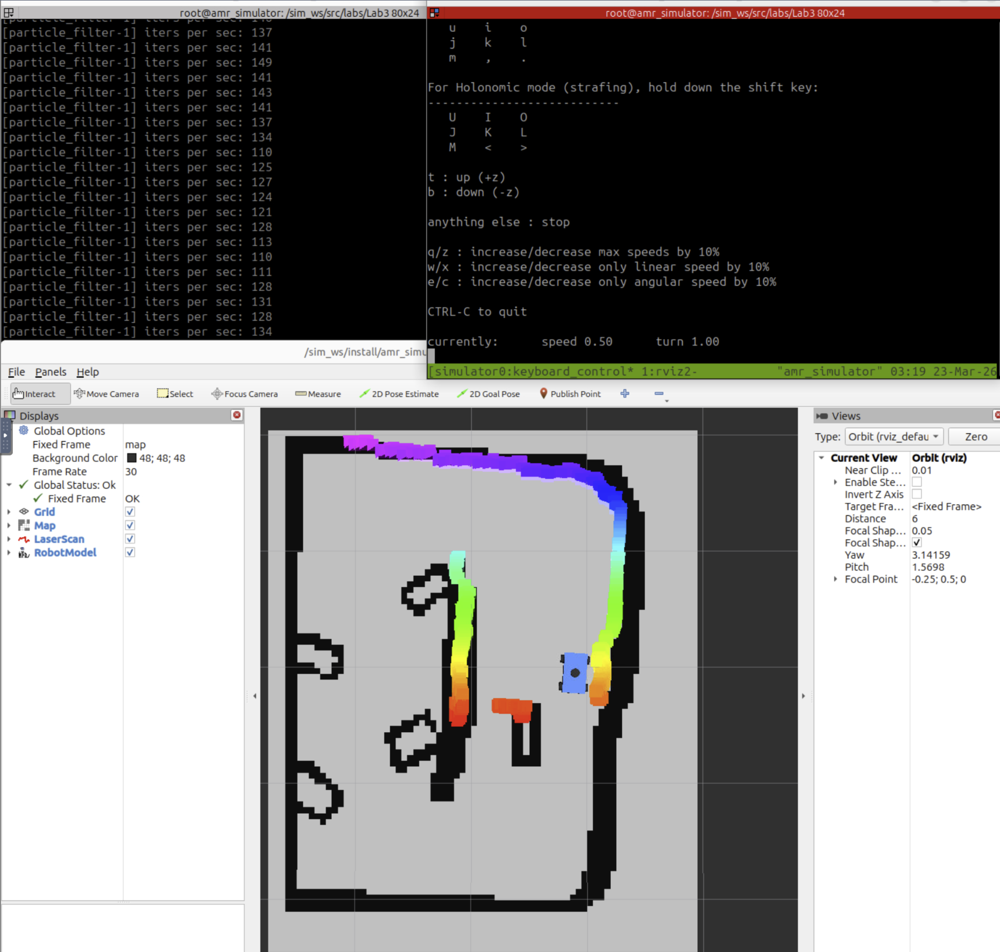
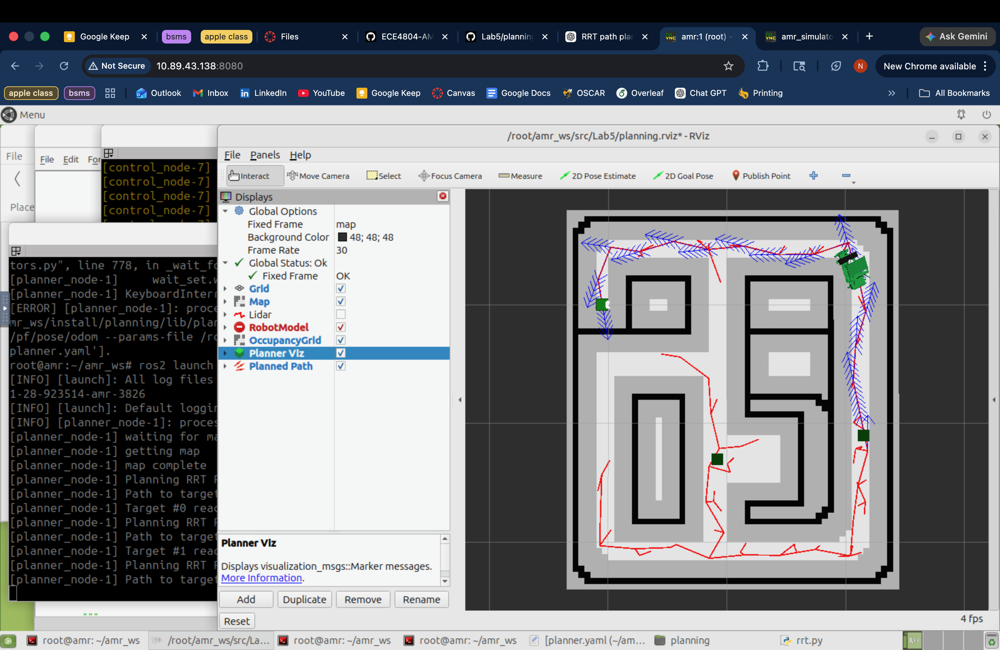

Engineering Project Hub
A log tracking the steady improvement and structural evolution of my hardware and software engineering systems design.
1. Chip Scale Power & Energy Instrumentation (VIP Consortium)
Sponsored by NASA-JPL, Duracell, and SOCOM, this consortium focuses on creating and characterizing in operando chip-scale electrochemical double layer (ECDL) supercapacitors. These storage architectures feature a functionalized pseudocapacitive structure coupled with a tailored ionic-liquid electrolyte embedded within a silicon wafer to power high-altitude telemetry sensors and mini IoT tracking devices.
My core contribution involved designing and tracking a custom printed circuit board (PCB) testing framework to capture and log supercapacitor performance curves targeted for orbital CubeSat platforms. Because orbital space hardware faces extreme ambient testing profiles, my routing demanded exact pad placement, trace impedance mitigation, and modular environmental isolation. The resulting instrumentation board housed real-time temperature monitoring, digital barometric altitude logging, and high-frequency capacitor discharge logging. Additionally, I built an automated hardware-level switch-over relay circuit that continuously watched the system health metrics and instantly moved load demands to a conventional power backup source if any voltage drops or current anomalies occurred, safeguarding active testing data framework.

2. Autonomous Mobile Robotics (AMR) Navigation Stack
This development track summarizes the engineering, deployment, and optimization of a complete navigation, localization, and motion control architecture for a physical autonomous vehicle navigating dynamic configuration spaces framework.
I. Reactive Autonomy & Collision Abatement
Initial efforts centered around low-level safety scripting utilizing a YDLIDAR X4 Pro system. I contributed to an automatic braking mechanism that dynamically computed a Time-to-Collision (TTC) profile across individual laser tracking channels. The system evaluated the scalar forward component of vehicular velocity projected onto the vector of each distinct sensor scan ray using the following dynamic formula:
If any single channel tracking metric dropped past our defined safety bounds, the node published immediate deceleration commands to clear risks. We coupled this with a reactive gap-following routine that applied disparity field extensions and safety indexing bubbles, allowing the vehicle to negotiate narrow corridors and map local escape routes without hitting structures.
II. Probabilistic Localization & Motion Stability
To overcome real-world tracking noise, our team set up a structural Monte Carlo Particle Filter localization engine. The node maintained an array of hypothetical poses across the environment, tracking lidar scans real-time against an occupancy grid. By tuning sensor weights and probabilistic motion calculations, the car estimated positions within a 3-4 pixel margin of ground truth tracking. We tied this position feedback into proportional-derivative (PD), Pure Pursuit, and Stanley control models, empirically tuning system gains ($K_p$, $K_d$) to resolve transient steering oscillations and achieve smooth path tracking.
III. Path Planning Extensions
The top layer involved calculating trajectories across discrete and continuous spaces using $A^*$ search and Rapidly Exploring Random Trees (RRT) algorithms. While grid-based $A^*$ yielded consistent trajectories, baseline continuous-space RRT suffered from erratic path selection due to its probabilistic random sampling patterns. To stabilize convergence rates on physical hardware, I built a real-time ray-casting check into the code loop. The algorithm evaluated straight-line visibility options between newly appended branches and the absolute goal position. If the trajectory path was unobstructed by map obstacles, the system bypassed further randomized branching, drawing a line straight to the target and closing the path. This optimization dramatically minimized runtime and slashed erratic steering behavior.

